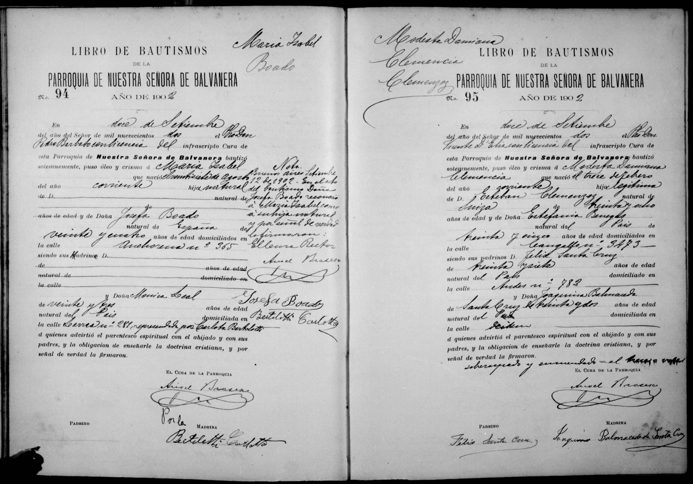

La historia
Modesta Damiana Clemencia nació el 13 de febrero de 1902 en la ciudad de Buenos Aires y fue bautizada el 12 de septiembre de 1902 en la Parroquia de Nuestra Señora de Balvanera (acta N.º 95), por el Pbro. Vicente D'Elia con licencia del cura Ángel Brasesco. El escribiente corrigió la fecha sobre el papel y lo salvó al pie: «sobreraspado y enmendado = el trece = vale».
El acta la declara hija legítima de Esteban Clemenzoz, «natural de Suiza», de 38 años (reales: 40), y de Estefanía Benegas, del País, de 35, domiciliados en la calle Cangallo N.º 3473 (Almagro/Balvanera): en 1902 la familia seguía en Buenos Aires.
Su bautismo fue
en tanda con el de su hermana Petrona (Petrona Estefania Clemenzoz, nacida en 1897): actas consecutivas (N.º 95 y 96), mismo día, mismo cura, mismos datos familiares y los mismos padrinos firmando en ambas — Esteban y Estefanía aprovecharon el nacimiento de Modesta para bautizar también a la hermana que llevaba casi cinco años sin bautizar. Eso explica el bautismo tardío de Petrona Estefania Clemenzoz.
Los padrinos de las dos hermanas fueron
Félix Santa Cruz (37 años, del País, Andes 782) y Joaquina Balmaceda de Santa Cruz (32, del País): sexta aparición del círculo Santa Cruz junto a la familia (1886, 1887, 1902 ×2, 1912, 1914) — a esta altura, la familia-satélite de los Clemenzoz porteños.
Cronología
| Año | Fuente | Qué dice |
|---|---|---|
| 1902-02-13 | Acta de bautismo N.º 95, Parroquia de Ntra. Sra. de Balvanera (Buenos Aires) | Nace en Buenos Aires; hija legítima de Esteban Clemenzoz (38, «natural de Suiza») y Estefanía Benegas (35, del País), calle Cangallo 3473 |
| 1902-09-12 | Ídem | Bautizada por el Pbro. Vicente D'Elia, en tanda con su hermana Petrona Estefania Clemenzoz (acta N.º 96); padrinos Félix Santa Cruz (37) y Joaquina Balmaceda de Santa Cruz (32), Andes 782 |
Qué falta / hipótesis
Ni matrimonio ni defunción documentados. Nada de ella después de 1902.
Líneas de investigación
- Buscar su matrimonio y defunción (¿Buenos Aires?)
Fuentes
- Acta de bautismo N.º 95, Parroquia de Nuestra Señora de Balvanera, Ciudad de Buenos Aires, 12-09-1902 (imagen en su ficha)
Documentos
